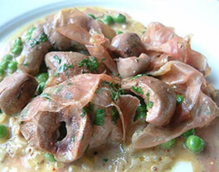

Veal Kidneys
"Veal kidneys". Ready to bite back?

A complex and profound dish.
Ingredients
- A pair of veal kidneys.
- A good glug of brandy or cognac.
- Onions, imperfectly chopped.
- Butter, rich and melting.
- Salt and pepper, to taste.
- A dash of mustard or cream.
Recipes instructions
- Clean those kidneys up. Remove the white, sinewy bits.
- In a hot skillet, throw in that butter and let it sizzle. Add the onions, letting them sweat. Let them sear, getting a good char.
- Here's where the magic happens. Pour in that brandy or cognac. Light it up! Watch it flame.
- Once the alcohol's burned off and you've had your show, season it well. If you're in the mood, stir in some mustard or cream. Mix until it all comes together.
There you have it. "Rognons de veau," or veal kidneys.
---
Return to main page